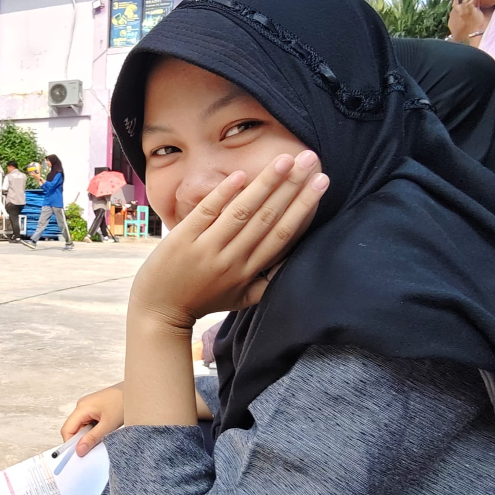
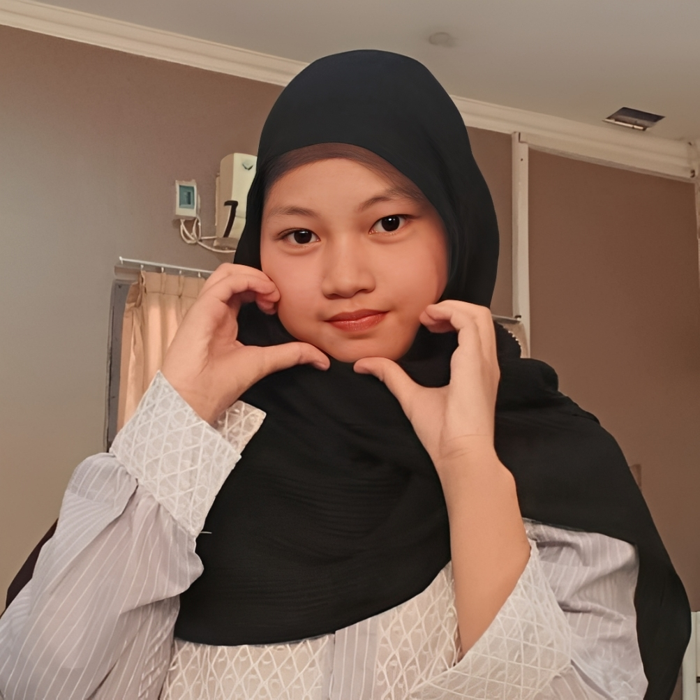
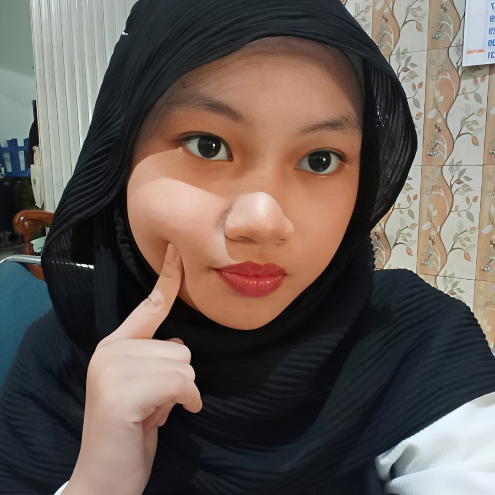

Selamat ulang tahun ya, princesss! ❤️✨ Di umur kamu yang ke 17 ini,, aku harap semoga semua doa, harapan, dan impian yang kamu punya bisa satu per satu terwujud 🤲✨ Semoga tahun ini menjadi tahun yang penuh kebahagiaan, keberuntungan, dan banyak hal baik yang datang ke hidup kamuu.. Aamiin.. ❤️ Makasih banyak yaa,, karena udah hadir dan menjadi salah satu bagian paling indah dalam hidupkuu ❤️ Makasih juga karena kamu selalu mewarnai hari hariku yang sebelumnya terasa biasa aja, bahkan kadang kerasa beratt.. 😓 Kehadiranmu bener bener punya arti yang besar banget buat akuu 🫶 Aku juga mau minta maaf kalau selama ini aku masih sering bikin kamu marah, kecewa, jengkel, atau ngerasa kurang nyaman 🙏 Maaf untuk semua sikap dan perkataanku yang mungkin pernah nyakitin kamuu.. Aku juga masih belajar untuk jadi seseorang yang lebih baik, baik untuk diriku sendiri atau yang terpenting untuk dirimu jugaa.. ❤️ Di umur kamu yang baru inii,, aku harap kamu bisa jadi wanita yang lebih kuat, dewasa, dan tangguh 💪✨ Aku tahu kalau perjalanan kamu ke depannya mungkin nggak selalu mudahh,, tapi aku selalu percaya kamu punya kemampuan untuk melewati semuanyaa.. Aku selalu lihat gimana caranya kamu tetap berusaha, gimana caranya kamu tetap bertahan, dan aku yakin suatu hari nanti kamu pasti bisa buktiin ke dunia kalau kamu mampu ngeraih semua yang kamu impikan ❤️🔥 Jangan pernah berhenti ngejar mimpi mimpi kamu waktu kecil yaa.. 🌙 Tetap jadi kamu yang aku kenal yaa,, seseorang yang selalu punya banyak hal indah di dalam dirinya ❤️ Aku juga berharap ke depannya kamu bisa semakin nyaman dan percaya sama akuu,, semoga kita juga bisa terus memperbaiki diri, saling memahami, dan saling ngedukung satu sama lainn 😄 Semoga hubungan ini bisa terus bertahan, tumbuh, dan menjadi lebih baik dari hari ke hari 🤗❤️ Sekali lagii,, happy sweet seventeen, princesss! ❤️🎂 Thank you for being a part of my life 🫶 May your day be as beautiful as your smile 😊 and may all good things always come your way ✨ And one more thing, I’m always proud of you ❤️